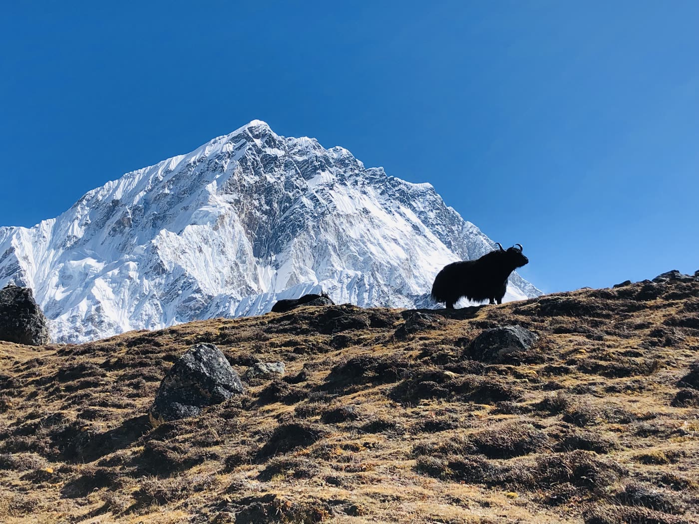

MH
Mark & Sarah Henderson 🇬🇧
London, United Kingdom • October 2025
 Guide: Pemba Nuru Sherpa
Guide: Pemba Nuru Sherpa
"Kala Patthar sunrise at 5,545m was pure magic — unmatched safety & warmth"
"From our first email inquiry to standing on the rocky summit of Kala Patthar watching sunrise paint the south face of Everest golden, Nepal Unique Treks was extraordinary. Pemba took our blood oxygen and pulse twice daily, paced our steps so we never felt breathless, and secured heated teahouse rooms with electric blankets in Dingboche. Best trip of our lives!"



Verified Trekker Review
 Guide: Lakpa Tenzing Sherpa
Guide: Lakpa Tenzing Sherpa


 Guide: Maya Gurung
Guide: Maya Gurung


 Guide: Pasang Sherpa
Guide: Pasang Sherpa